Carbon stocks assessment wkgfgerklrltgith National Forest Inventories Data
Loading the required Packages
library(tidyverse)
library(dplyr)
library(ggplot2)
library(stringr)
library(maps)
library(mapdata)
library(maptools)
library(sp)
library(raster)
library(BIOMASS)
library(ape)
library(magrittr)
library(tinytex)
library(raster)
library(rgdal)load the dataframe
Trees <- read.csv("Data_Output/Final_dataframe(29-10-2019).csv", stringsAsFactors = F)
str(Trees)## 'data.frame': 327623 obs. of 19 variables:
## $ DIST : chr "Pyay" "Pyay" "Pyay" "Pyay" ...
## $ TSP : chr "Paukkaung" "Paukkaung" "Paukkaung" "Paukkaung" ...
## $ RF_PPF_UCF : chr "North Nawin RF" "North Nawin RF" "North Nawin RF" "North Nawin RF" ...
## $ D_ID : int 3 3 3 3 3 3 3 3 3 3 ...
## $ GISID : chr "1037" "1037" "1037" "1037" ...
## $ EAST : int 789506 789506 789506 789506 789506 789506 789506 789506 789506 789506 ...
## $ NORTH : int 2121406 2121406 2121406 2121406 2121406 2121406 2121406 2121406 2121406 2121406 ...
## $ ALT : chr "234" "234" "234" "234" ...
## $ LC : int 3 3 3 3 3 3 3 3 3 3 ...
## $ FT : int 63 63 63 63 63 63 63 63 63 63 ...
## $ DEN : int 2 2 2 2 2 2 2 2 2 2 ...
## $ TNO : int 1 2 3 4 5 6 7 8 9 10 ...
## $ Species_Code: int 337 999 460 30 30 128 285 278 417 393 ...
## $ DBH_mm : int 410 450 540 780 760 500 290 460 600 600 ...
## $ DBH_cm : num 41 45 54 78 76 50 29 46 60 60 ...
## $ Year : int 2017 2017 2017 2017 2017 2017 2017 2017 2017 2017 ...
## $ Genus : chr "Premna" "Unknown" "Vitex" "Anogeissus" ...
## $ Species : chr "pyramidata" "species" "pubescens" "acuminata" ...
## $ Plot_names : chr "789506 _ 2121406" "789506 _ 2121406" "789506 _ 2121406" "789506 _ 2121406" ...Obtaining wood density
Obtaining Wood density - getWoodDensity assigns to each taxon a species- or genus-level average if at least one wood density value in the same genus as the focal taxon is available in the reference database. For unidentified trees or if the genus is missing in the reference database, the stand-level mean wood density is assigned to the tree (based on trees for which a value was attributed).
Taxo <- correctTaxo(genus= Trees$Genus, species = Trees$Species)
Trees$genusCorr <- Taxo$genusCorrected
Trees$speciesCorr <- Taxo$speciesCorrected
APG <- getTaxonomy(Trees$genusCorr, findOrder =T)
Trees$familyAPG <- APG$family
Trees$orderAPG <- APG$order
dataWD <- getWoodDensity(genus=Trees$genusCorr,
species=Trees$speciesCorr,
stand=NULL, family = Trees$familyAPG, region = "World")
Trees <- Trees %>% mutate(DBH_cm=DBH_mm/10) %>% mutate(WD=dataWD$meanWD)Building a Diameter Height Model based on the first year data
library(lme4)
Forests <- read.csv("Data/All_data_Final.csv", stringsAsFactors = F)
names(Forests)## [1] "Forest_type" "Plot_id" "Species_names" "Genus"
## [5] "Species" "Family" "Dbh_cm" "H_m"
## [9] "WD" "AGB" "C_Tree" "BA"
## [13] "Lat" "Long" "Northing" "Easting"
## [17] "Tenure"Forests <- filter(Forests,!is.na(Species_names) & !is.na(Dbh_cm))
summary(Forests)## Forest_type Plot_id Species_names Genus
## Length:4444 Min. : 1.00 Length:4444 Length:4444
## Class :character 1st Qu.: 23.00 Class :character Class :character
## Mode :character Median : 53.00 Mode :character Mode :character
## Mean : 55.69
## 3rd Qu.: 89.00
## Max. :119.00
## Species Family Dbh_cm H_m
## Length:4444 Length:4444 Min. : 3.00 Min. : 0.3048
## Class :character Class :character 1st Qu.: 10.00 1st Qu.: 9.1440
## Mode :character Mode :character Median : 14.50 Median :15.2400
## Mean : 19.02 Mean :19.5457
## 3rd Qu.: 24.00 3rd Qu.:25.3049
## Max. :137.00 Max. :83.0000
## WD AGB C_Tree
## Min. :0.2200 Min. : 0.001082 Min. :0.000508
## 1st Qu.:0.6014 1st Qu.: 0.042343 1st Qu.:0.019901
## Median :0.7200 Median : 0.136046 Median :0.063941
## Mean :0.7164 Mean : 0.523717 Mean :0.246147
## 3rd Qu.:0.8500 3rd Qu.: 0.477241 3rd Qu.:0.224303
## Max. :1.0950 Max. :20.000150 Max. :9.400070
## BA Lat Long Northing
## Min. :0.000707 Min. :18.88 Min. :95.22 Min. :2089871
## 1st Qu.:0.007854 1st Qu.:20.85 1st Qu.:95.24 1st Qu.:2306949
## Median :0.016513 Median :20.89 Median :95.26 Median :2311426
## Mean :0.042563 Mean :20.66 Mean :95.34 Mean :2285967
## 3rd Qu.:0.045239 3rd Qu.:20.91 3rd Qu.:95.27 3rd Qu.:2313971
## Max. :1.474114 Max. :20.93 Max. :96.08 Max. :2316236
## Easting Tenure
## Min. :193210 Length:4444
## 1st Qu.:732675 Class :character
## Median :734513 Mode :character
## Mean :729817
## 3rd Qu.:736259
## Max. :809669unique(Forests$Forest_type)## [1] "Dipterocarpus_Forest" "Dry_Forest"
## [3] "Dry_Hill_Forest" "Dry_Mixed_Deciduous_Forest"
## [5] "Moist_Mixed_Deciduous_Forest"Selected_Forests <- Forests %>% filter(Forest_type=="Moist_Mixed_Deciduous_Forest")
LogDH_Selected_Forests <- Selected_Forests %>% mutate(LogDbh_cm=log(Dbh_cm)) %>% mutate(LogH_m=log(H_m))
ggplot(data = Selected_Forests, aes(Dbh_cm, H_m, color=Forest_type) )+ geom_point()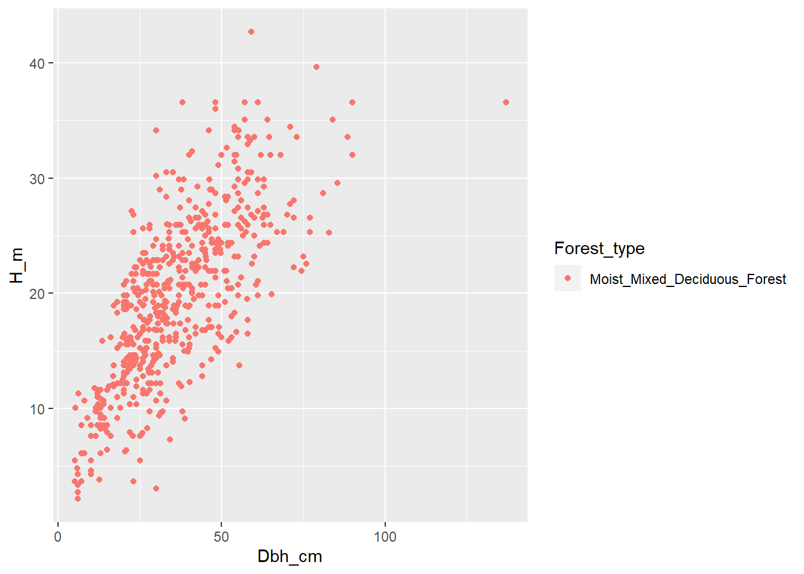
ModelForHeight <- lmer(log(H_m)~log(Dbh_cm)+(1|Plot_id), REML = FALSE, data = Selected_Forests)
ModelForHeight## Linear mixed model fit by maximum likelihood ['lmerMod']
## Formula: log(H_m) ~ log(Dbh_cm) + (1 | Plot_id)
## Data: Selected_Forests
## AIC BIC logLik deviance df.resid
## 119.4670 136.9671 -55.7335 111.4670 583
## Random effects:
## Groups Name Std.Dev.
## Plot_id (Intercept) 0.1565
## Residual 0.2558
## Number of obs: 587, groups: Plot_id, 18
## Fixed Effects:
## (Intercept) log(Dbh_cm)
## 0.5433 0.6719ranef(ModelForHeight)$Plot_id[,1] %>% hist(breaks=10)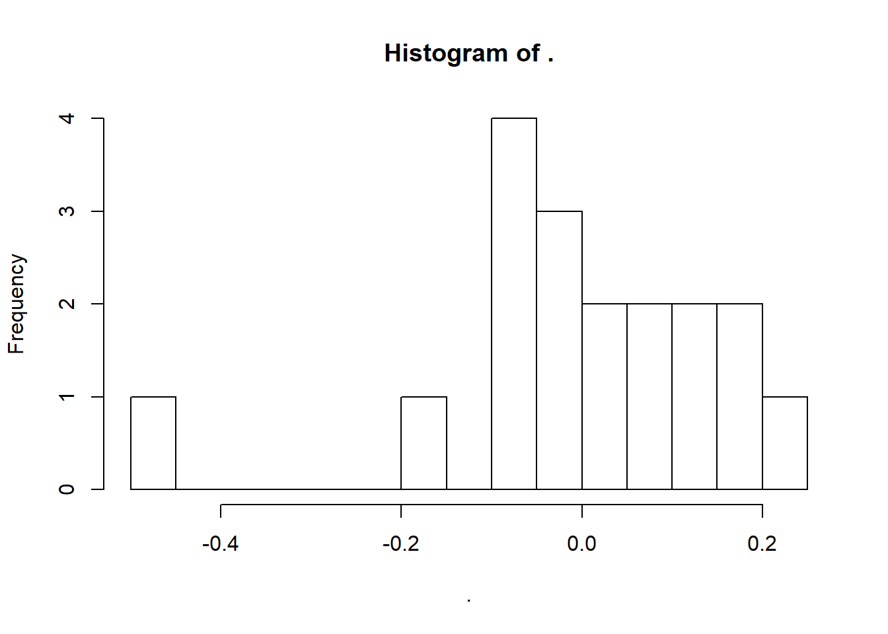
ModelForHeight_Log <- lmer(LogH_m~LogDbh_cm +(1|Plot_id), REML = FALSE, data = LogDH_Selected_Forests)
ModelForHeight_Log## Linear mixed model fit by maximum likelihood ['lmerMod']
## Formula: LogH_m ~ LogDbh_cm + (1 | Plot_id)
## Data: LogDH_Selected_Forests
## AIC BIC logLik deviance df.resid
## 119.4670 136.9671 -55.7335 111.4670 583
## Random effects:
## Groups Name Std.Dev.
## Plot_id (Intercept) 0.1565
## Residual 0.2558
## Number of obs: 587, groups: Plot_id, 18
## Fixed Effects:
## (Intercept) LogDbh_cm
## 0.5433 0.6719The best possible random effect model
summary(ModelForHeight_Log)## Linear mixed model fit by maximum likelihood ['lmerMod']
## Formula: LogH_m ~ LogDbh_cm + (1 | Plot_id)
## Data: LogDH_Selected_Forests
##
## AIC BIC logLik deviance df.resid
## 119.5 137.0 -55.7 111.5 583
##
## Scaled residuals:
## Min 1Q Median 3Q Max
## -6.6389 -0.5303 0.0305 0.5817 3.1785
##
## Random effects:
## Groups Name Variance Std.Dev.
## Plot_id (Intercept) 0.02449 0.1565
## Residual 0.06543 0.2558
## Number of obs: 587, groups: Plot_id, 18
##
## Fixed effects:
## Estimate Std. Error t value
## (Intercept) 0.54327 0.08372 6.489
## LogDbh_cm 0.67192 0.02149 31.272
##
## Correlation of Fixed Effects:
## (Intr)
## LogDbh_cm -0.889ranef(ModelForHeight_Log)$Plot_id[,1] %>% hist()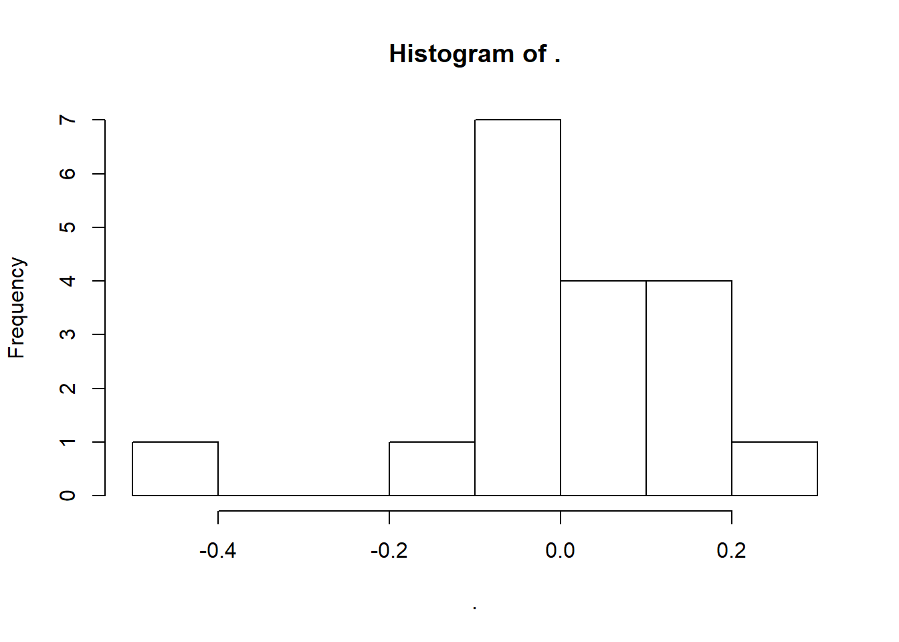 Getting tree Height based on the best model and substracted the lowest random effect of the plot no. 115 from every plots of the dataframe that I need to predict Height. Plot no. 115 had the lowest random effect number.
Trees$H_pred <- predict(ModelForHeight_Log, data.frame(LogDbh_cm= log(Trees$DBH_cm), Plot_id=115))
Trees <- Trees %>%
mutate(AdjustH_Pred=exp(H_pred))Testing the DBH and Height relationship for trees—–
ggplot(data = Trees, aes(DBH_cm, AdjustH_Pred) )+ geom_point()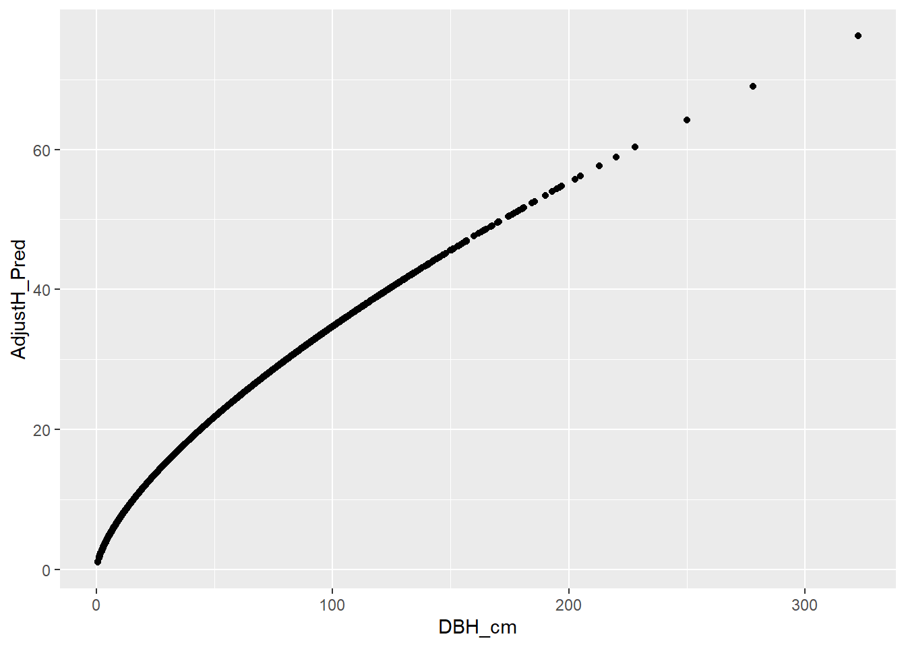
Calculating the biomass of each tree
Where, D = Tree diameter (in cm), either a vector or a single value Wood density (in g/cm3), either a vector or a single value. Tree height (H in m), either a vector or a single value.
CoordsH <- cbind(Trees$EAST, Trees$NORTH)
Trees <- Trees %>% mutate(AGB=computeAGB(D = DBH_cm, WD = WD, H = AdjustH_Pred, coord = CoordsH, Dlim = NULL))
Trees <- Trees %>% mutate(Carbon_Mg= AGB*0.471)
write.csv(Trees, file = "Data_Output/Trees.csv", row.names = F)Sampling Method
image: 
1 ha sample plot with a 50m * 50 m nested plot. Therefore, the big dataframe was splitted into two according to the DBH limit measured in the 50m * 50m subplot. (100m x 100m and 50m x 50m)
Trees <- read.csv("Data_Output/Trees.csv", stringsAsFactors = F)
Trees <- droplevels(Trees)
Trees_1ha <- Trees %>% filter(DBH_mm >= 200)
Trees_50m <- Trees %>% filter(DBH_mm < 200)** Calculating the carbon per ha for two different size plots**
Plot_1ha <- Trees_1ha %>%
group_by(Plot_names,DIST,Year, EAST, NORTH) %>%
dplyr::summarise(C_ha = sum(Carbon_Mg))
Plot_50M <- Trees_50m %>%
group_by(Plot_names,DIST,Year, EAST, NORTH) %>%
dplyr::summarise(C_Tree_total = sum(Carbon_Mg)) %>%
mutate(C_ha=C_Tree_total/0.25) %>% dplyr::select(-C_Tree_total)Combining two dataframes of different plot size according to Plot names.In this process, NA values- generated were replaced with zero in order to add carbon per ha of different plot size together. Carbon per hectare columns of the two dataframes were added together to obtain total carbon of each plot in hectare scale.
All_Plots <- bind_rows(Plot_1ha,Plot_50M) %>% group_by(Plot_names,Year,DIST,EAST, NORTH) %>% summarise(Sum_CHa=sum(C_ha))
droplevels(All_Plots)## # A tibble: 8,172 x 6
## # Groups: Plot_names, Year, DIST, EAST [8,172]
## Plot_names Year DIST EAST NORTH Sum_CHa
## <chr> <int> <chr> <int> <int> <dbl>
## 1 185000 _ 2029000 2012 Bago 185000 2029000 3.82
## 2 185000 _ 2031000 2012 Bago 185000 2031000 10.2
## 3 185000 _ 2033000 2012 Bago 185000 2033000 10.9
## 4 185000 _ 2035000 2012 Bago 185000 2035000 9.33
## 5 185000 _ 2037000 2012 Bago 185000 2037000 12.4
## 6 185000 _ 2039000 2012 Bago 185000 2039000 11.1
## 7 185000 _ 2041000 2012 Bago 185000 2041000 16.6
## 8 187000 _ 2027000 2012 Bago 187000 2027000 3.43
## 9 187000 _ 2029000 2012 Bago 187000 2029000 8.92
## 10 187000 _ 2031000 2012 Bago 187000 2031000 13.9
## # ... with 8,162 more rowshist(All_Plots$Sum_CHa, breaks=100)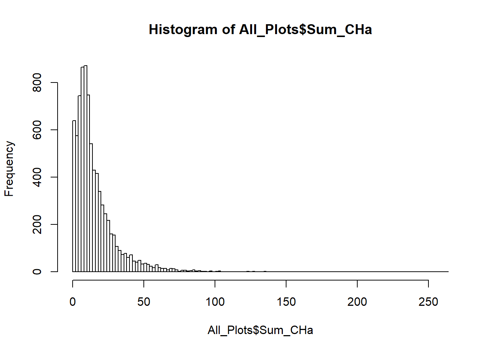
Producing a clean dataframe
All_Plots$Year <- as.factor(All_Plots$Year)
summary(All_Plots)## Plot_names Year DIST EAST
## Length:8172 2014 :2824 Length:8172 Min. : 185000
## Class :character 2013 :1100 Class :character 1st Qu.: 629000
## Mode :character 2015 :1024 Mode :character Median : 680002
## 2010 : 957 Mean : 839850
## 2016 : 824 3rd Qu.: 766000
## 2012 : 566 Max. :2199000
## (Other): 877
## NORTH Sum_CHa
## Min. : 181974 Min. : 0.03207
## 1st Qu.:2052655 1st Qu.: 6.26052
## Median :2470006 Median : 10.95067
## Mean :2124797 Mean : 15.36247
## 3rd Qu.:2646000 3rd Qu.: 19.75048
## Max. :2824000 Max. :263.42935
## write.csv(All_Plots, file = "Data_Output/All_plots.csv", row.names = F)ggplot(data = All_Plots, aes(x = DIST, y= log(Sum_CHa), color= Year))+
geom_boxplot()+
labs(title = "Carbon storage per ha in 21 disctricts from 2010 to 2017",
x= "District name",
y= "Carbon(t/ha)")+
theme(axis.text.x = element_text(size=7, angle = 90, vjust = 0.5),
axis.text.y = element_text(size = 7))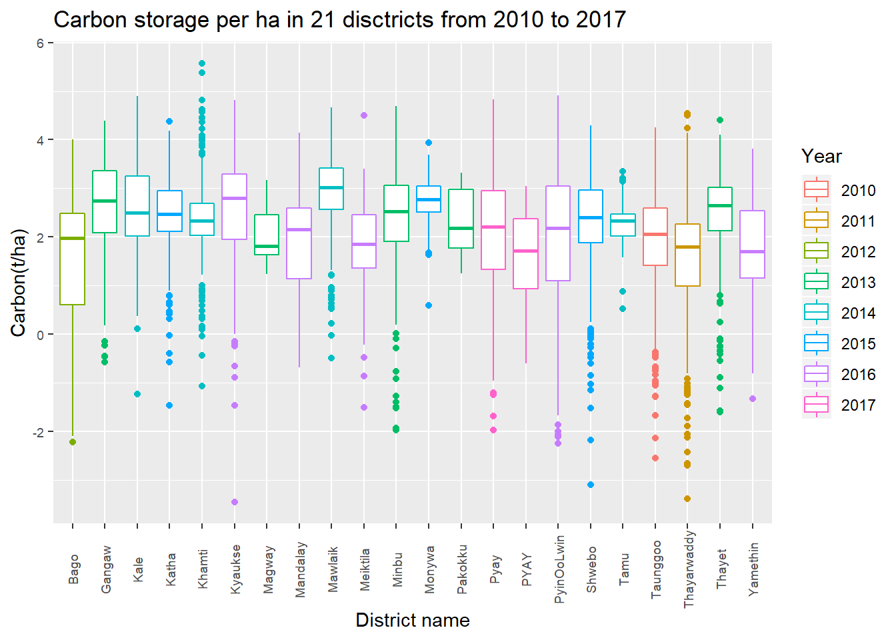
This section describes how the plots’ location errors were fixed. All plots’ locations were plotted according to 46 Q and 47 Q CRS. Then, plots located in 46 Q zone and 47 Q zone were sliced from the main dataframe. The remaining plots wich were outside of the country boundry were thoroughly checked for theirs north and east location. It found that North and East were the other way wrong. So, I renamed East to North and North to East.After that, most of the plots are back in the country boundary area.However, some plots were still in the wrong positions. So, I had to slice the edited 46 and 47 Out dataframes as 46 Adjusted and 47 Adjusted (which are the plots that have to be shifted from their position as they were in the paddy fieds instead of being in the forest). The closet plots which are in the right position were referenced to move the wrong plots. (E.g checked the right plot’s North and East and possible typo errors such as 9 to 5 or flipping the numbers front to back and back to front). Then, the adjusted 46Q plots and 47Q plots were joined back to the 46Out and 47Out dataframe to obtain the total plots numbers that have been fixed for the right locations by using r bind funciton. Then the corrected plots locations dataframe was joined with the carbon-per-plot dataframe which has the wrong North and East by excluding them based on the plots_names. Finally, the dataframe which as the right plot locations and carbon per plot was created. Based on the final plot_carbon dataframe, shape file of the plot locations(edited) was produced. This shape file will be used to extract the remotely sensed data from the Google Earth Engine.
library(tidyverse)
library(dplyr)
library(ggplot2)
library(stringr)
library(maps)
library(mapdata)
library(maptools)
library(sp)
library(raster)
library(BIOMASS)
library(ape)
library(magrittr)
library(tinytex)
library(raster)
library(rgdal)
In_46 <- read.csv("Data_Output/Qgis_edited_Plots_Locations and Carbon/In_Plots46.csv",stringsAsFactors = F)
In_47 <- read.csv("Data_Output/Qgis_edited_Plots_Locations and Carbon/In_Plots47.csv",stringsAsFactors = F)
Out_47 <- read.csv("Data_Output/Qgis_edited_Plots_Locations and Carbon/Out_47.csv", stringsAsFactors = F)
Out_46 <- read.csv("Data_Output/Qgis_edited_Plots_Locations and Carbon/Out_46.csv", stringsAsFactors = F)
Out_46Adjusted <- read.csv("Data_Output/Qgis_edited_Plots_Locations and Carbon/46 Adjusted.csv", stringsAsFactors = F)
Out_47Adjusted <- read.csv("Data_Output/Qgis_edited_Plots_Locations and Carbon/47 Adjusted.csv",stringsAsFactors = F)
Out46RowToBeRemoved <- Out_46Adjusted$Plot_names
Cleaned_Out46 <- Out_46[-which(Out_46$Plot_names %in% Out46RowToBeRemoved),]
New_Out46 <- rbind(Cleaned_Out46,Out_46Adjusted)
Out47RowToBeRemoved <- Out_47Adjusted$Plot_names
Cleaned_Out47 <- Out_47[-which(Out_47$Plot_names %in% Out47RowToBeRemoved),]
New_Out47 <- rbind(Cleaned_Out47,Out_47Adjusted)
Lcorrected_Plots <- rbind(In_46,In_47,New_Out46, New_Out47)
Carbon <- read.csv("Data_Output/All_plots.csv", stringsAsFactors = F)
Carbon <- Carbon %>% dplyr::select(Plot_names,Sum_CHa)
Plot_Carbon <- left_join(Lcorrected_Plots,Carbon, by="Plot_names")
str(Plot_Carbon)## 'data.frame': 8175 obs. of 7 variables:
## $ Plot_names: chr "591000 _ 2275000" "591000 _ 2277000" "591000 _ 2280000" "593000 _ 2275000" ...
## $ Year : int 2013 2013 2013 2013 2013 2013 2013 2013 2013 2013 ...
## $ DIST : chr "Minbu" "Minbu" "Minbu" "Minbu" ...
## $ EAST : int 591000 591000 591000 593000 593000 593000 594000 595000 595000 595000 ...
## $ NORTH : int 2275000 2277000 2280000 2275000 2277000 2279000 2283000 2275000 2277000 2279000 ...
## $ Zone : int 46 46 46 46 46 46 46 46 46 46 ...
## $ Sum_CHa : num 8.2 6.56 5 9.39 8.74 ...summary(Plot_Carbon)## Plot_names Year DIST EAST
## Length:8175 Min. :2010 Length:8175 Min. :181974
## Class :character 1st Qu.:2013 Class :character 1st Qu.:237000
## Mode :character Median :2014 Mode :character Median :660008
## Mean :2014 Mean :564012
## 3rd Qu.:2015 3rd Qu.:716000
## Max. :2017 Max. :817813
## NORTH Zone Sum_CHa
## Min. :1897000 Min. :46.00 Min. : 0.03207
## 1st Qu.:2107054 1st Qu.:46.00 1st Qu.: 6.26089
## Median :2471000 Median :46.00 Median : 10.94829
## Mean :2401019 Mean :46.28 Mean : 15.36008
## 3rd Qu.:2646000 3rd Qu.:47.00 3rd Qu.: 19.74903
## Max. :2824000 Max. :47.00 Max. :263.42935world2HiresMapEnv## [1] "R_MAPDATA_DATA_DIR"data(wrld_simpl)
myanmar <- wrld_simpl[wrld_simpl$NAME=="Burma",]
plot(myanmar)
myanmar_utm46 <- spTransform(myanmar, "+init=epsg:32646")
myanmar_utm47 <- spTransform(myanmar, "+init=epsg:32647")
plot(myanmar_utm47)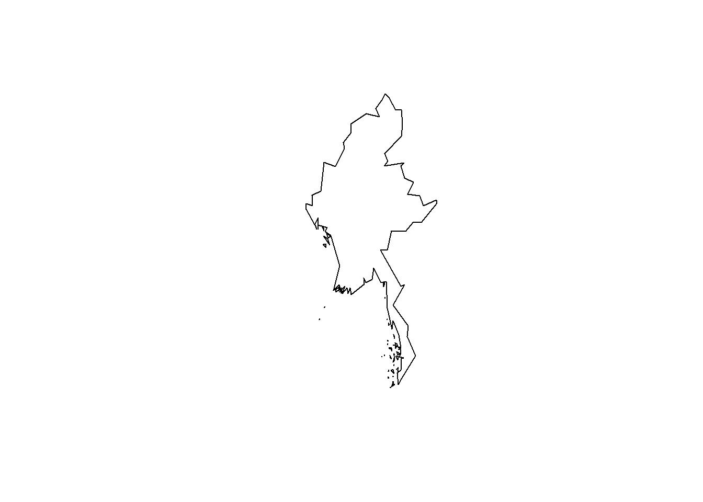
plot(myanmar_utm46)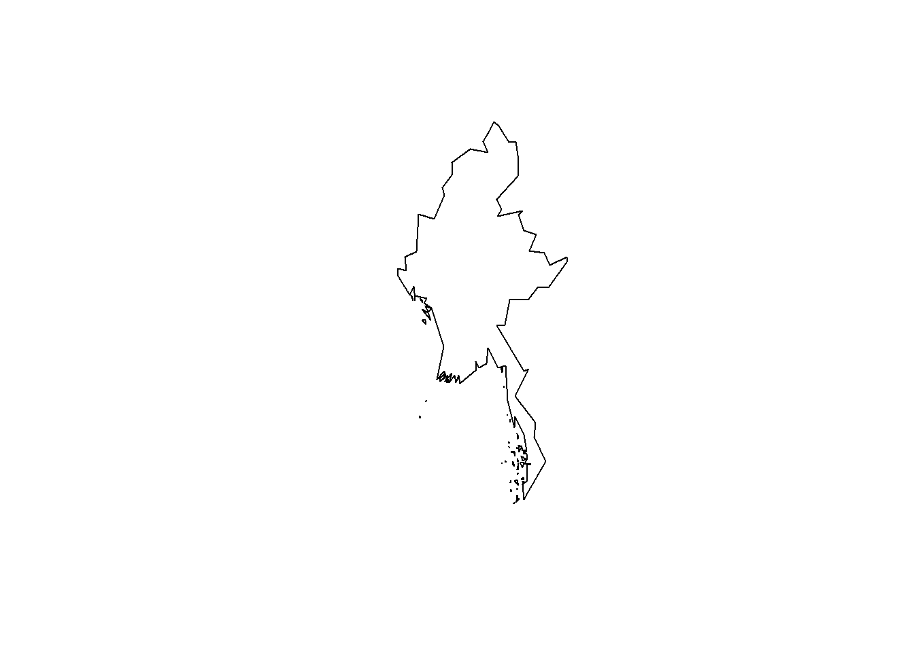
# Loading the known plots and add a colum called Zone (46/47)----
coords46 <- Plot_Carbon %>%
filter(Zone==46)
coords47 <-Plot_Carbon %>%
filter(Zone ==47)
coords46 = SpatialPoints(cbind(coords46$EAST, coords46$NORTH))
proj4string(coords46) = CRS("+init=epsg:32646")
coords46<-spTransform(coords46, "+init=epsg:4326")
coords47 = SpatialPoints(cbind(coords47$EAST, coords47$NORTH))
proj4string(coords47) = CRS("+init=epsg:32647")
coords47<-spTransform(coords47, "+init=epsg:4326")
par(mar=c(4,4,2,2), mfrow =c(2,2))
plot(myanmar, border = "red")
plot(coords46, add = TRUE, cex = 0.1, col = "blue")
plot(coords47, add= TRUE, cex = 0.1, col = "green")
Plot_Carbon$Year <- as.factor(Plot_Carbon$Year)
ggplot(data = Plot_Carbon, aes(x = DIST, y= log(Sum_CHa), color= Year))+
geom_boxplot()+
labs(title = "Carbon storage per ha in 21 disctricts from 2010 to 2017",
x= "District name",
y= "Carbon(t/ha)")+
theme(axis.text.x = element_text(size=7, angle = 90, vjust = 0.5),
axis.text.y = element_text(size = 7))
glm.CarbonDistrict <- glm(log(Sum_CHa)~DIST, data = Plot_Carbon, family= gaussian(link="identity") )
anova(glm.CarbonDistrict)## Analysis of Deviance Table
##
## Model: gaussian, link: identity
##
## Response: log(Sum_CHa)
##
## Terms added sequentially (first to last)
##
##
## Df Deviance Resid. Df Resid. Dev
## NULL 8174 9019.3
## DIST 21 1461.3 8153 7557.9plot(glm.CarbonDistrict)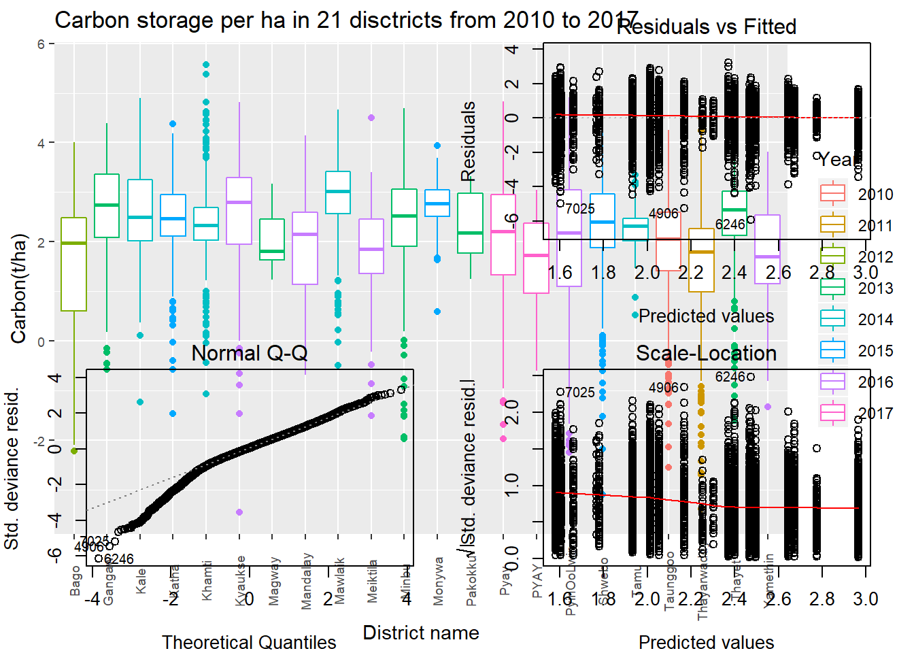
summary(glm.CarbonDistrict)##
## Call:
## glm(formula = log(Sum_CHa) ~ DIST, family = gaussian(link = "identity"),
## data = Plot_Carbon)
##
## Deviance Residuals:
## Min 1Q Median 3Q Max
## -5.9140 -0.4895 0.0612 0.6094 3.2033
##
## Coefficients:
## Estimate Std. Error t value Pr(>|t|)
## (Intercept) 1.58027 0.04047 39.048 < 2e-16 ***
## DISTGangaw 1.09037 0.06782 16.077 < 2e-16 ***
## DISTKale 1.06494 0.05203 20.468 < 2e-16 ***
## DISTKatha 0.91479 0.05510 16.602 < 2e-16 ***
## DISTKhamti 0.79021 0.05113 15.454 < 2e-16 ***
## DISTKyaukse 0.89394 0.08518 10.494 < 2e-16 ***
## DISTMagway 0.44788 0.34280 1.307 0.1914
## DISTMandalay 0.18788 0.22456 0.837 0.4028
## DISTMawlaik 1.38396 0.05098 27.150 < 2e-16 ***
## DISTMeiktila 0.19949 0.10926 1.826 0.0679 .
## DISTMinbu 0.81782 0.06016 13.595 < 2e-16 ***
## DISTMonywa 1.19506 0.08089 14.774 < 2e-16 ***
## DISTPakokku 0.72237 0.17242 4.190 2.82e-05 ***
## DISTPyay 0.47291 0.06458 7.323 2.66e-13 ***
## DISTPYAY 0.02476 0.12697 0.195 0.8454
## DISTPyinOoLwin 0.43265 0.06012 7.196 6.73e-13 ***
## DISTShwebo 0.58691 0.08383 7.001 2.74e-12 ***
## DISTTamu 0.67095 0.14616 4.591 4.49e-06 ***
## DISTTaunggoo 0.35140 0.05105 6.883 6.30e-12 ***
## DISTThayarwaddy 0.02089 0.06096 0.343 0.7319
## DISTThayet 0.88753 0.07052 12.586 < 2e-16 ***
## DISTYamethin 0.08024 0.11438 0.702 0.4830
## ---
## Signif. codes: 0 '***' 0.001 '**' 0.01 '*' 0.05 '.' 0.1 ' ' 1
##
## (Dispersion parameter for gaussian family taken to be 0.9270118)
##
## Null deviance: 9019.3 on 8174 degrees of freedom
## Residual deviance: 7557.9 on 8153 degrees of freedom
## AIC: 22604
##
## Number of Fisher Scoring iterations: 2Grid46 <- Plot_Carbon %>% filter(Zone=="46")
Grid47 <- Plot_Carbon %>% filter(Zone=="47")
coords46 = SpatialPoints(cbind(Grid46$EAST, Grid46$NORTH))
proj4string(coords46) = CRS("+init=epsg:32646")
coords46 <- spTransform(coords46, "+init=epsg:4326")
coords47 = SpatialPoints(cbind(Grid47$EAST, Grid47$NORTH))
proj4string(coords47) = CRS("+init=epsg:32647")
coords47 <- spTransform(coords47, "+init=epsg:4326")
Plots_location <- rbind(coords46,coords47)
spdf = SpatialPointsDataFrame(Plots_location,data = Plot_Carbon)
writeOGR(spdf,"locations_WGS84Edited.shp", layer="plot_locations", driver = "ESRI Shapefile")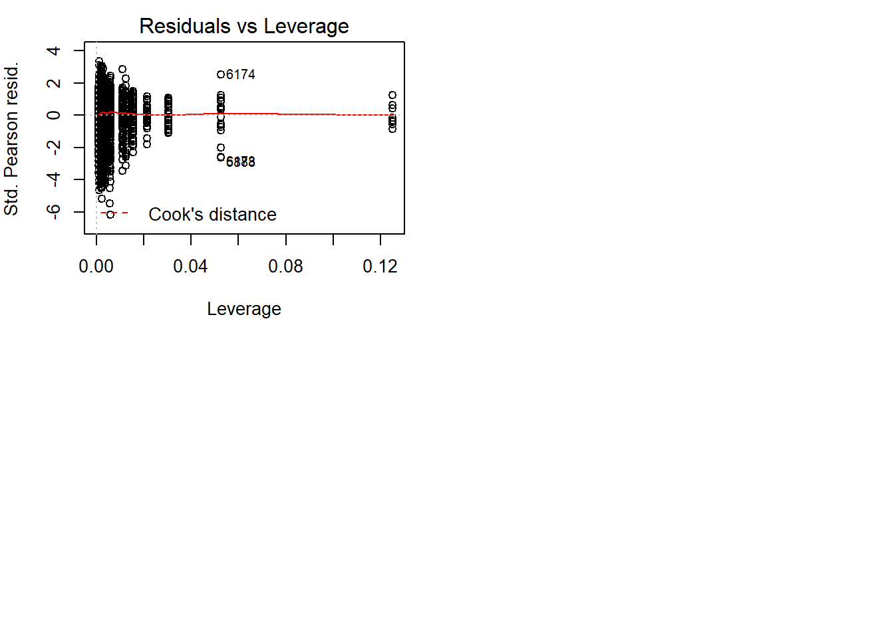
This section describes how carbon storage of all the plots are different according to the ecoregions published by WWF.The plot locations shape file and ecoregion shape files ware used with QGIS to extract which plots belong to which ecoregions. The function called “Join attributed by locations” was used in this process.
Ecoregions <- read.csv("Data_Output/Ecoregion-Plots-Edited(31-10-2019).csv", stringsAsFactors = F)
glm.CarbonEcoregions <- glm(log(Sum_CHa)~ECO_NAME, data = Ecoregions, family = gaussian(link = "identity"))
anova(glm.CarbonEcoregions)## Analysis of Deviance Table
##
## Model: gaussian, link: identity
##
## Response: log(Sum_CHa)
##
## Terms added sequentially (first to last)
##
##
## Df Deviance Resid. Df Resid. Dev
## NULL 8174 8870.9
## ECO_NAME 6 442.34 8168 8428.6plot(glm.CarbonEcoregions)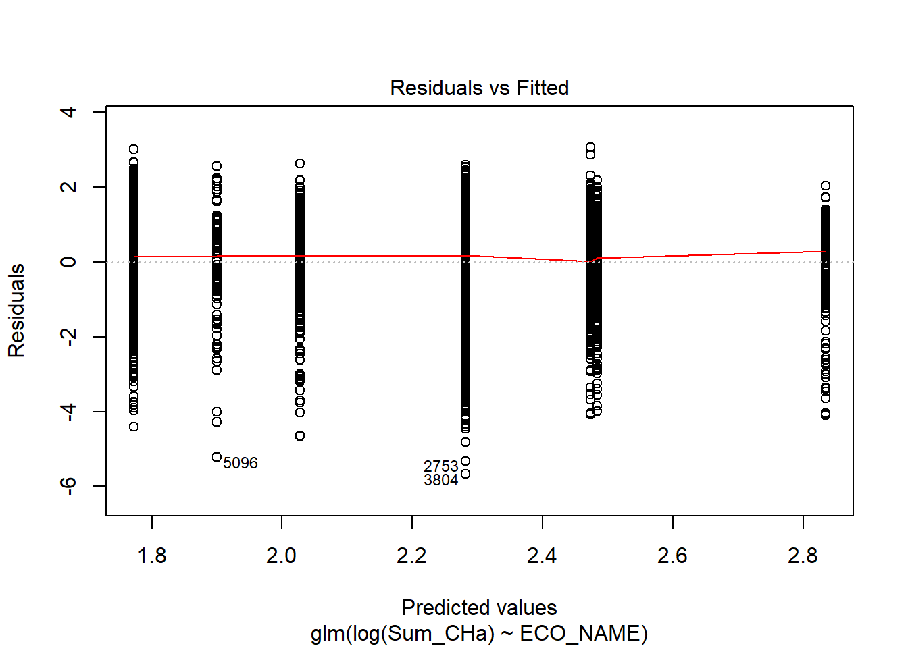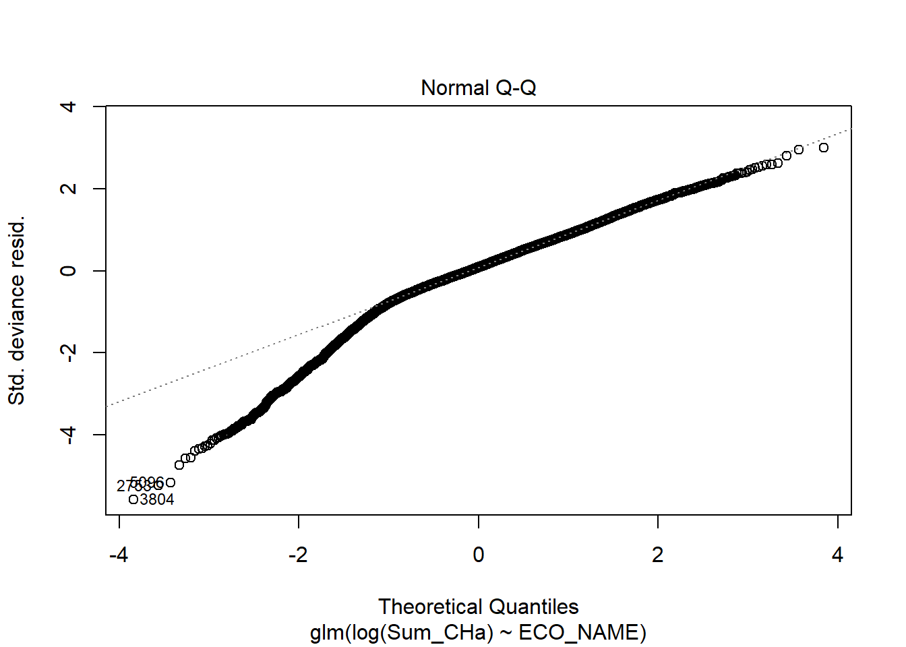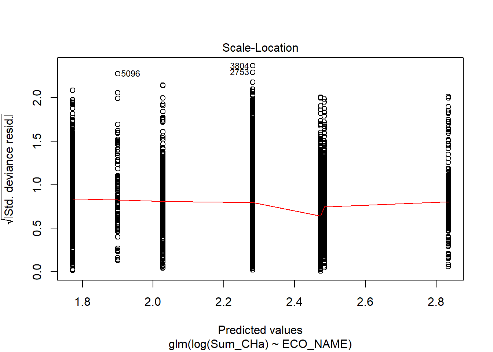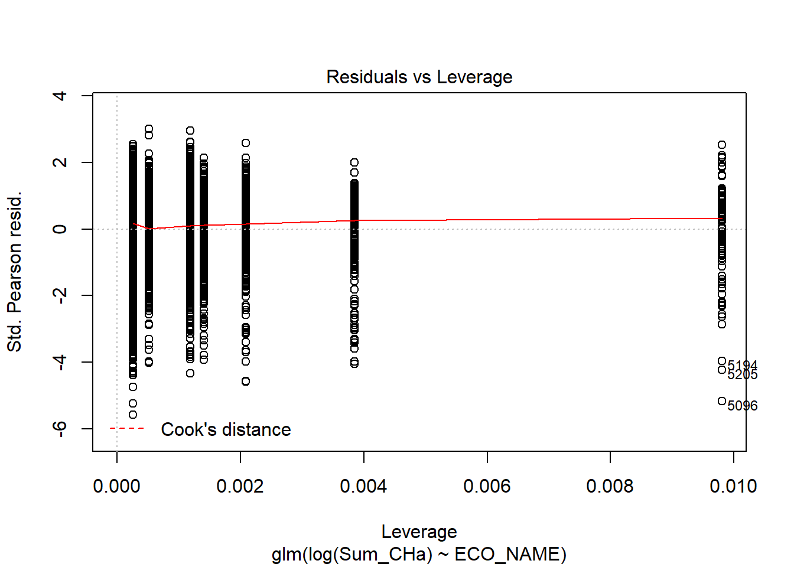
summary(glm.CarbonEcoregions)##
## Call:
## glm(formula = log(Sum_CHa) ~ ECO_NAME, family = gaussian(link = "identity"),
## data = Ecoregions)
##
## Deviance Residuals:
## Min 1Q Median 3Q Max
## -5.6755 -0.4703 0.0883 0.6506 3.0578
##
## Coefficients:
## Estimate Std. Error
## (Intercept) 2.483172 0.038123
## ECO_NAMEIrrawaddy Dry Forests 0.350752 0.073636
## ECO_NAMEIrrawaddy Moist Deciduous Forests -0.202172 0.041490
## ECO_NAMEKayah-Karen Montane Rain Forests -0.583397 0.107564
## ECO_NAMEMizoram-Manipur-Kachin Rain Forests -0.009885 0.044575
## ECO_NAMEMyanmar Coastal Rain Forests -0.710824 0.051786
## ECO_NAMENorthern Indochina Subtropical Forests -0.455724 0.060064
## t value Pr(>|t|)
## (Intercept) 65.135 < 2e-16 ***
## ECO_NAMEIrrawaddy Dry Forests 4.763 1.94e-06 ***
## ECO_NAMEIrrawaddy Moist Deciduous Forests -4.873 1.12e-06 ***
## ECO_NAMEKayah-Karen Montane Rain Forests -5.424 6.00e-08 ***
## ECO_NAMEMizoram-Manipur-Kachin Rain Forests -0.222 0.825
## ECO_NAMEMyanmar Coastal Rain Forests -13.726 < 2e-16 ***
## ECO_NAMENorthern Indochina Subtropical Forests -7.587 3.63e-14 ***
## ---
## Signif. codes: 0 '***' 0.001 '**' 0.01 '*' 0.05 '.' 0.1 ' ' 1
##
## (Dispersion parameter for gaussian family taken to be 1.031901)
##
## Null deviance: 8870.9 on 8174 degrees of freedom
## Residual deviance: 8428.6 on 8168 degrees of freedom
## AIC: 23465
##
## Number of Fisher Scoring iterations: 2boxplot(log(Sum_CHa)~ECO_NAME, data = Ecoregions)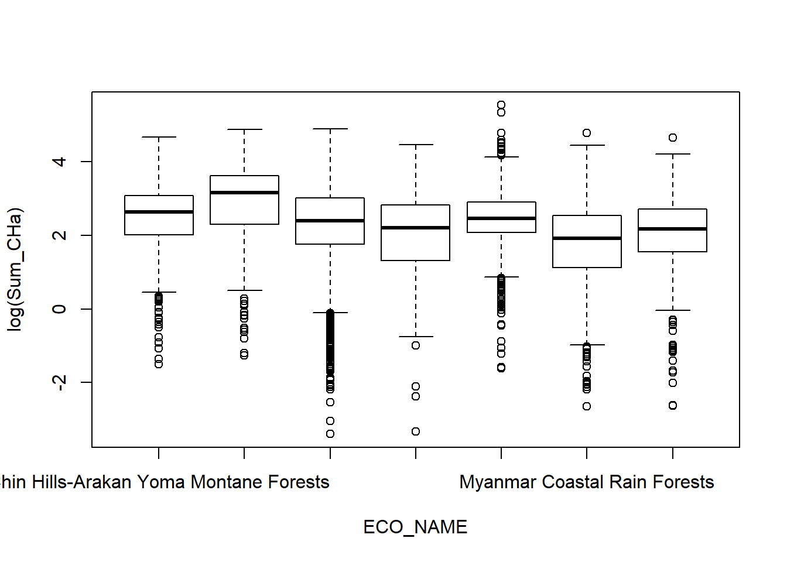
aov.CarbonEcoregions <- aov(Sum_CHa~ECO_NAME, data = Ecoregions)
summary(aov.CarbonEcoregions)## Df Sum Sq Mean Sq F value Pr(>F)
## ECO_NAME 6 57143 9524 46.93 <2e-16 ***
## Residuals 8168 1657535 203
## ---
## Signif. codes: 0 '***' 0.001 '**' 0.01 '*' 0.05 '.' 0.1 ' ' 1ggplot(data=Ecoregions, aes(x=ECO_NAME, y = log(Sum_CHa), color=ECO_NAME))+ geom_boxplot()+
labs(title = "Carbon storage according to ecoregions",
x= "Ecoregion",
y= "MaxCarbon(t/ha)")+
theme(axis.text.x = element_text(size=7, angle = 90, vjust = 0.5),
axis.text.y = element_text(size = 7))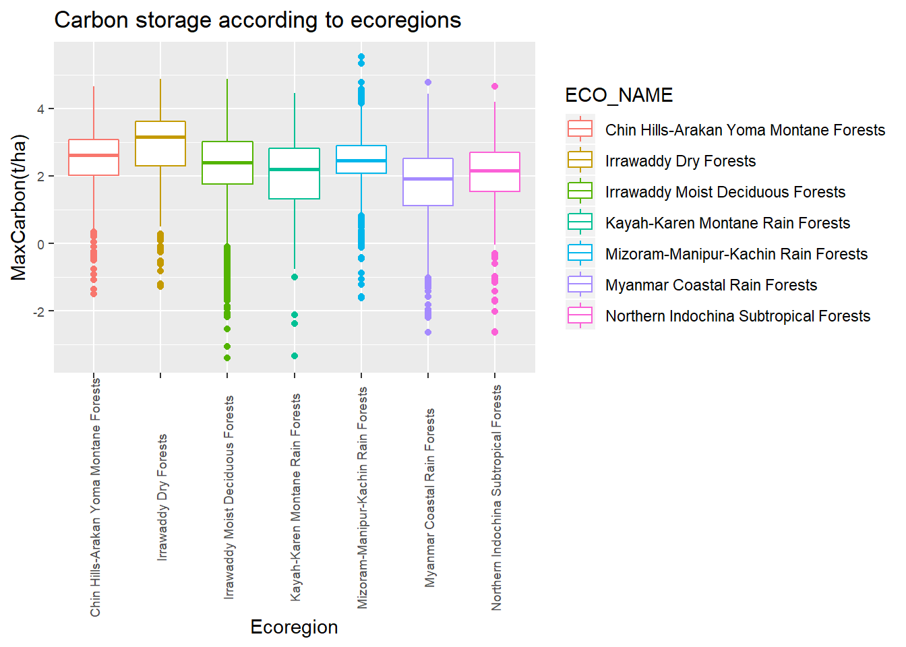
Carbon and environmental conditions relationship
BIO1 = Annual Mean Temperature
BIO2 = Mean Diurnal Range (Mean of monthly (max temp - min temp))
BIO3 = Isothermality (BIO2/BIO7) (* 100)
BIO4 = Temperature Seasonality (standard deviation *100)
BIO5 = Max Temperature of Warmest Month
BIO6 = Min Temperature of Coldest Month
BIO7 = Temperature Annual Range (BIO5-BIO6)
BIO8 = Mean Temperature of Wettest Quarter
BIO9 = Mean Temperature of Driest Quarter
BIO10 = Mean Temperature of Warmest Quarter
BIO11 = Mean Temperature of Coldest Quarter
BIO12 = Annual Precipitation
BIO13 = Precipitation of Wettest Month
BIO14 = Precipitation of Driest Month
BIO15 = Precipitation Seasonality (Coefficient of Variation)
BIO16 = Precipitation of Wettest Quarter
BIO17 = Precipitation of Driest Quarter
BIO18 = Precipitation of Warmest Quarter
BIO19 = Precipitation of Coldest Quarter
I performed a simple liner regression analysis on the two variables Carbon and Annual precipitaion(AP)/Annual Mean Temperature(AMT). I wish to determine wheter the AP/AMT varible is a significant predictor of the Carbon Variable.
Env <- read.csv("Data_Output/WCL_plots_edited(31-10-2019).csv")plot(Sum_CHa~bio01, data = Env)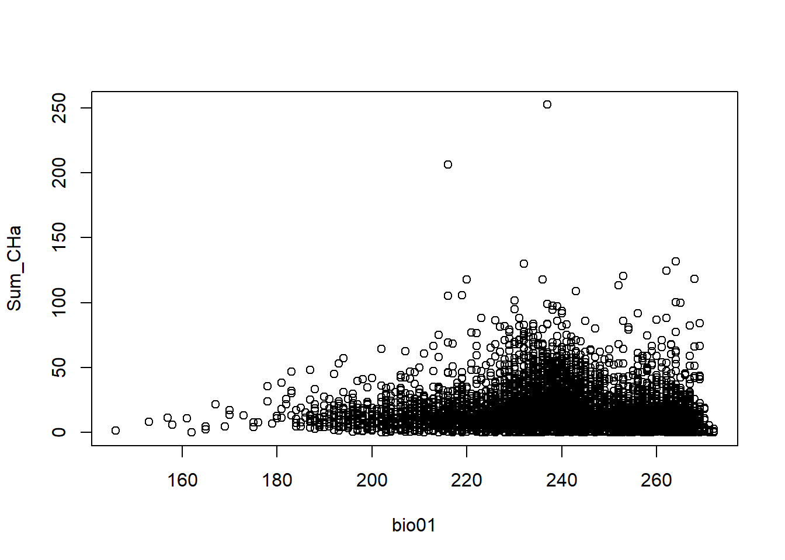
glm.AMT <- glm(log(Sum_CHa)~bio01,data=Env, family = gaussian(link = "identity"))
summary(glm.AMT)##
## Call:
## glm(formula = log(Sum_CHa) ~ bio01, family = gaussian(link = "identity"),
## data = Env)
##
## Deviance Residuals:
## Min 1Q Median 3Q Max
## -5.8069 -0.4910 0.0786 0.6569 3.1932
##
## Coefficients:
## Estimate Std. Error t value Pr(>|t|)
## (Intercept) 5.2827674 0.1561265 33.84 <2e-16 ***
## bio01 -0.0124258 0.0006465 -19.22 <2e-16 ***
## ---
## Signif. codes: 0 '***' 0.001 '**' 0.01 '*' 0.05 '.' 0.1 ' ' 1
##
## (Dispersion parameter for gaussian family taken to be 1.038453)
##
## Null deviance: 8870.9 on 8174 degrees of freedom
## Residual deviance: 8487.3 on 8173 degrees of freedom
## AIC: 23512
##
## Number of Fisher Scoring iterations: 2plot(glm.AMT)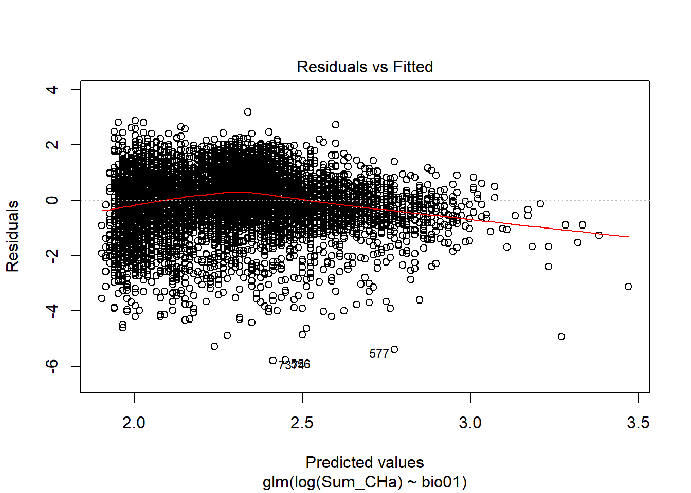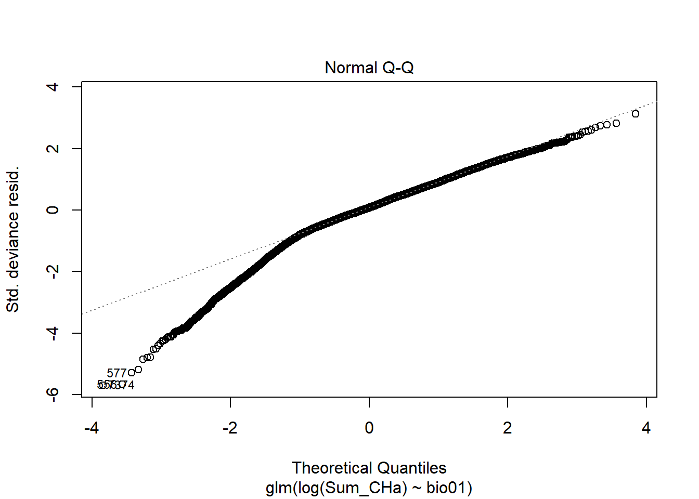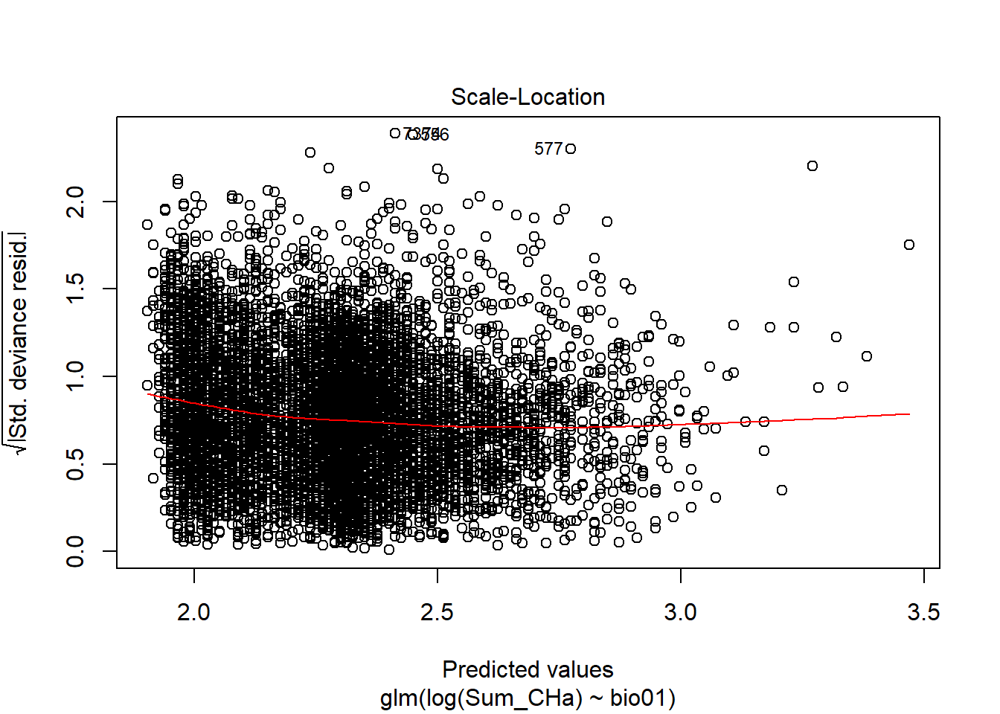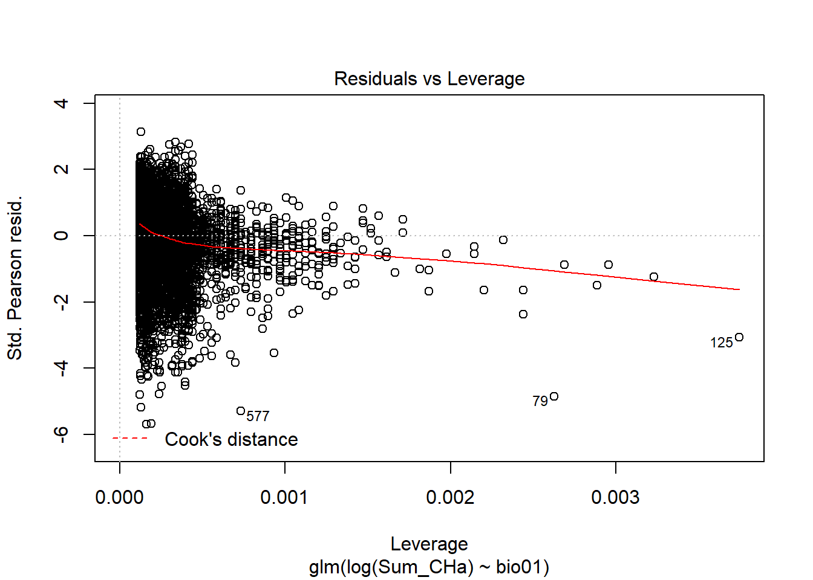
# According to Year
ggplot(data=Env, aes(x=log(bio01), y = log(Sum_CHa), color=DIST))+ geom_line()+
facet_wrap(facets = vars(Year))+
labs(title = "Carbon storage and Annual Mean Temperature Relationship according to Census Year",
x= "Log Annual Mean Temperature",
y= "Log Carbon(t/ha)")+
theme(axis.text.x = element_text(size=7, angle = 45, vjust = 0.5),
axis.text.y = element_text(size = 7))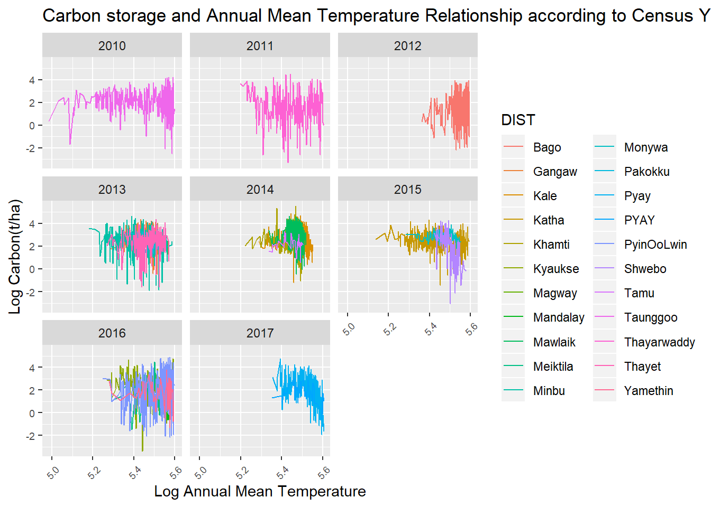
plot(log(Sum_CHa)~bio12, data = Env)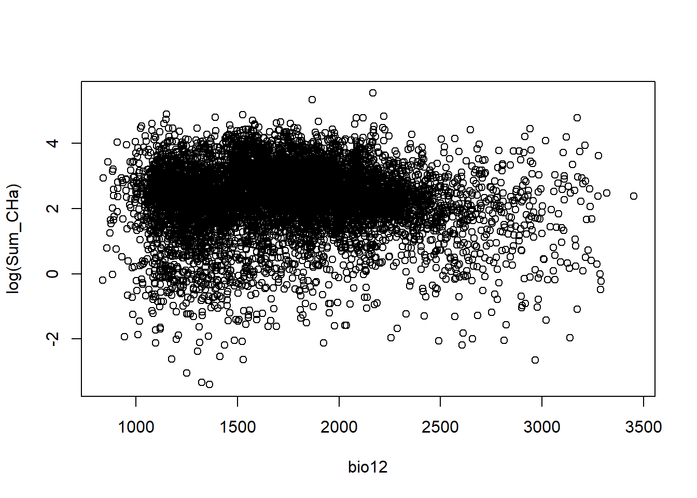
glm.AMP <- glm(log(Sum_CHa)~bio12, data=Env, family = gaussian(link = "identity"))
anova(glm.AMP)## Analysis of Deviance Table
##
## Model: gaussian, link: identity
##
## Response: log(Sum_CHa)
##
## Terms added sequentially (first to last)
##
##
## Df Deviance Resid. Df Resid. Dev
## NULL 8174 8870.9
## bio12 1 1.6046 8173 8869.3summary(glm.AMP)##
## Call:
## glm(formula = log(Sum_CHa) ~ bio12, family = gaussian(link = "identity"),
## data = Env)
##
## Deviance Residuals:
## Min 1Q Median 3Q Max
## -5.6969 -0.4616 0.0959 0.6774 3.2550
##
## Coefficients:
## Estimate Std. Error t value Pr(>|t|)
## (Intercept) 2.3469599 0.0484333 48.458 <2e-16 ***
## bio12 -0.0000327 0.0000269 -1.216 0.224
## ---
## Signif. codes: 0 '***' 0.001 '**' 0.01 '*' 0.05 '.' 0.1 ' ' 1
##
## (Dispersion parameter for gaussian family taken to be 1.085196)
##
## Null deviance: 8870.9 on 8174 degrees of freedom
## Residual deviance: 8869.3 on 8173 degrees of freedom
## AIC: 23872
##
## Number of Fisher Scoring iterations: 2ggplot(data=Env, aes(x=bio12, y = log(Sum_CHa), color=DIST))+ geom_point(alpha=1/5)+
labs(title = "Carbon storage and Annual Precipitation Relationship",
x= "Annual Annual Precipitation (mm)",
y= "Carbon(t/ha)")+
theme(axis.text.x = element_text(size=7, angle = 90, vjust = 0.5),
axis.text.y = element_text(size = 7))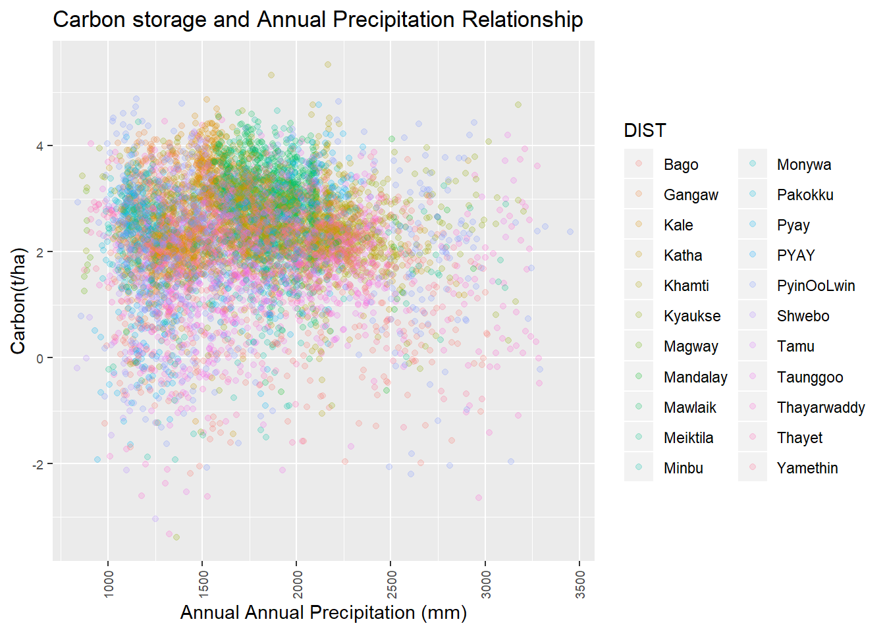
theme(axis.text.x = element_text(size=7, angle = 45, vjust = 0.5),
axis.text.y = element_text(size = 7))## List of 2
## $ axis.text.x:List of 11
## ..$ family : NULL
## ..$ face : NULL
## ..$ colour : NULL
## ..$ size : num 7
## ..$ hjust : NULL
## ..$ vjust : num 0.5
## ..$ angle : num 45
## ..$ lineheight : NULL
## ..$ margin : NULL
## ..$ debug : NULL
## ..$ inherit.blank: logi FALSE
## ..- attr(*, "class")= chr [1:2] "element_text" "element"
## $ axis.text.y:List of 11
## ..$ family : NULL
## ..$ face : NULL
## ..$ colour : NULL
## ..$ size : num 7
## ..$ hjust : NULL
## ..$ vjust : NULL
## ..$ angle : NULL
## ..$ lineheight : NULL
## ..$ margin : NULL
## ..$ debug : NULL
## ..$ inherit.blank: logi FALSE
## ..- attr(*, "class")= chr [1:2] "element_text" "element"
## - attr(*, "class")= chr [1:2] "theme" "gg"
## - attr(*, "complete")= logi FALSE
## - attr(*, "validate")= logi TRUE# According to Year
ggplot(data=Env, aes(x=bio12, y = log(Sum_CHa), color=DIST))+ geom_line()+
# facet_wrap(facets = vars(DIST))+
labs(title = "Carbon storage and Annual Precipitation (mm) Relationship According to Census Year",
x= "Annual Precipitation (mm)",
y= "Carbon(t/ha)")+
theme(axis.text.x = element_text(size=7, angle = 90, vjust = 0.5),
axis.text.y = element_text(size = 7))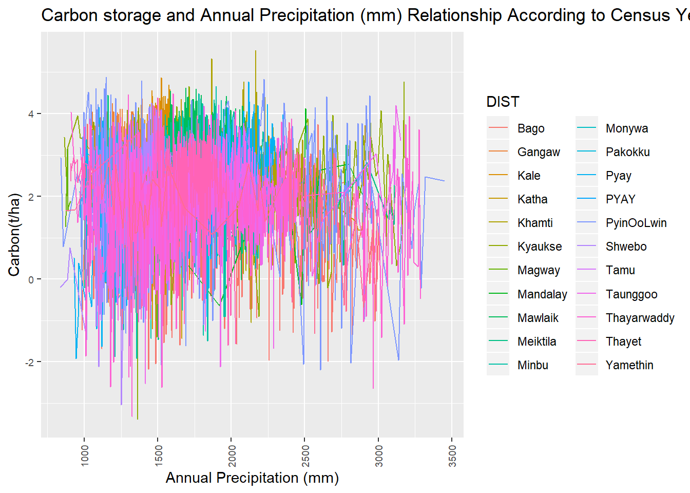
n<-10000
rsq<-vector(n, mode = 'numeric')
pval<-vector(n, mode = 'numeric')
for(i in 1:n){
x<-rnorm(100)
y<-rnorm(100)
fm<-lm(y~x)
fm_sum<-summary(fm)
rsq[[i]]<-fm_sum$r.squared
pval[[i]]<-fm_sum$coefficients[2,4]
}
hist(rsq, breaks = 100)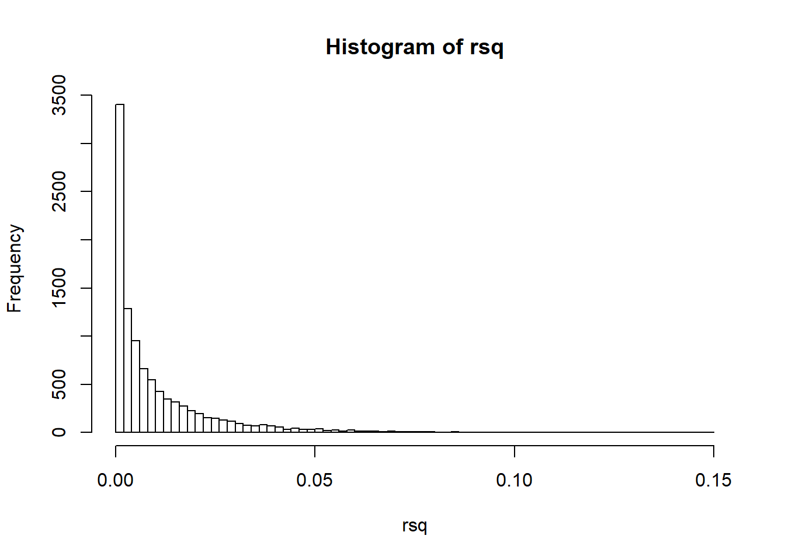
hist(pval, breaks = 100)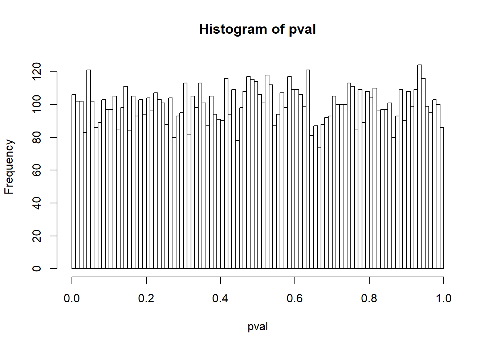
(sum(pval<0.05) / length(pval))*100## [1] 5.14